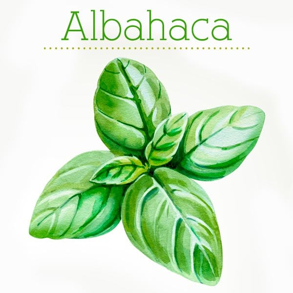

🪄 Hortalizas: Lechuga, espinaca y acelga son las más comunes en hidroponía debido a su rápido crecimiento.
🪄 Frutos: Tomate, fresa y pepino también pueden cultivarse con excelentes resultados.
🪄 Hierbas aromáticas: Albahaca, menta y cilantro crecen muy bien en sistemas hidropónicos.

🪄 Otros cultivos: Pimientos y chiles también pueden adaptarse dependiendo del sistema.